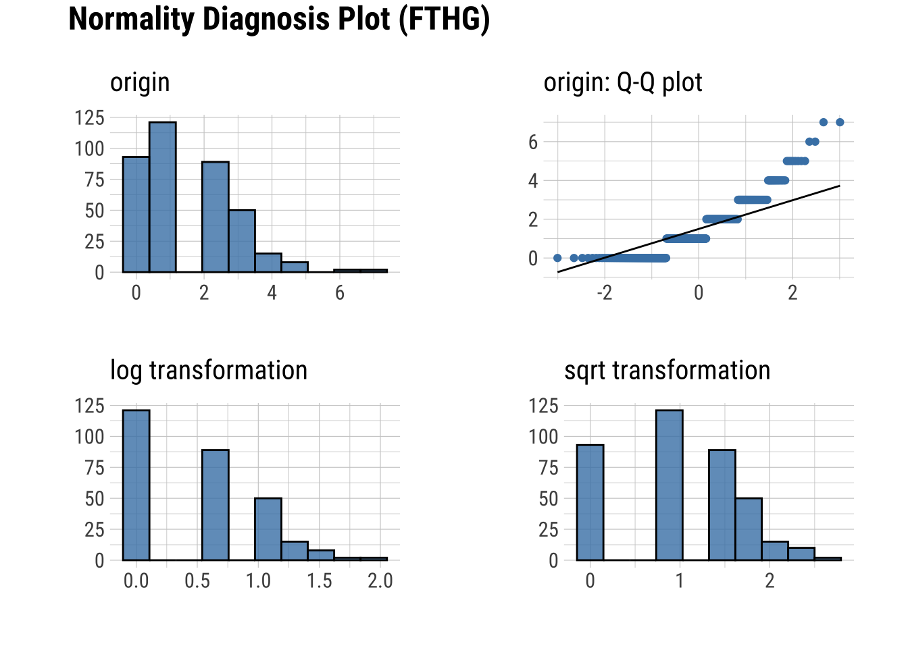
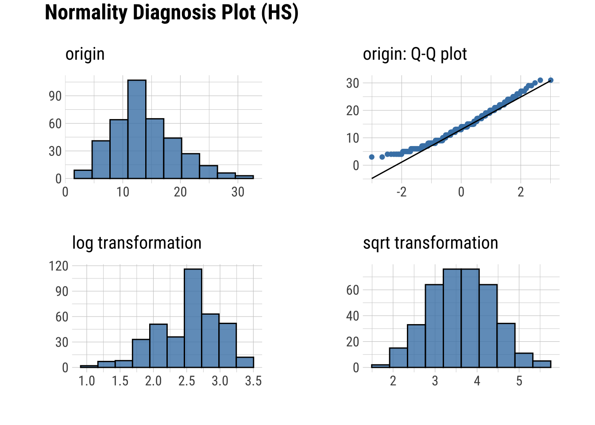

# Sets the number of significant figures to two - e.g., 0.01
options(digits = 2)
# Required package for quick package downloading and loading
if (!require(pacman))
install.packages("pacman")
# Downloads and load required packages
pacman::p_load(dlookr, # Exploratory data analysis
forecast, # Needed for Box-Cox transformations
formattable, # HTML tables from R outputs
here, # Standardizes paths to data
kableExtra, # Alternative to formattable
knitr, # Needed to write HTML reports
missRanger, # To generate NAs
tidyverse,
tidytuesdayR,showtextdb) # Powerful data wrangling package suitehw-02-01-Transforming like a Data…Transformer
SETUP
tuesdata <- tidytuesdayR::tt_load('2023-04-04')
Downloading file 1 of 1: `soccer21-22.csv`tuesdata <- tidytuesdayR::tt_load(2023, week = 14)
Downloading file 1 of 1: `soccer21-22.csv`Load and Examine the data
I have selected the Premier League match day data. It contains data of every team and their matches in the 2021-2022 season. The data includes teams playing, date, referee, and stats for home and away side such as shots, fouls, cards, halftime and full time result and more.
soccer <- tuesdata$soccersoccer |>
head() |>
formattable()| Date | HomeTeam | AwayTeam | FTHG | FTAG | FTR | HTHG | HTAG | HTR | Referee | HS | AS | HST | AST | HF | AF | HC | AC | HY | AY | HR | AR |
|---|---|---|---|---|---|---|---|---|---|---|---|---|---|---|---|---|---|---|---|---|---|
| 13/08/2021 | Brentford | Arsenal | 2 | 0 | H | 1 | 0 | H | M Oliver | 8 | 22 | 3 | 4 | 12 | 8 | 2 | 5 | 0 | 0 | 0 | 0 |
| 14/08/2021 | Man United | Leeds | 5 | 1 | H | 1 | 0 | H | P Tierney | 16 | 10 | 8 | 3 | 11 | 9 | 5 | 4 | 1 | 2 | 0 | 0 |
| 14/08/2021 | Burnley | Brighton | 1 | 2 | A | 1 | 0 | H | D Coote | 14 | 14 | 3 | 8 | 10 | 7 | 7 | 6 | 2 | 1 | 0 | 0 |
| 14/08/2021 | Chelsea | Crystal Palace | 3 | 0 | H | 2 | 0 | H | J Moss | 13 | 4 | 6 | 1 | 15 | 11 | 5 | 2 | 0 | 0 | 0 | 0 |
| 14/08/2021 | Everton | Southampton | 3 | 1 | H | 0 | 1 | A | A Madley | 14 | 6 | 6 | 3 | 13 | 15 | 6 | 8 | 2 | 0 | 0 | 0 |
| 14/08/2021 | Leicester | Wolves | 1 | 0 | H | 1 | 0 | H | C Pawson | 9 | 17 | 5 | 3 | 6 | 10 | 5 | 4 | 1 | 2 | 0 | 0 |
Describing Properties of our Data (refined)
Skewness tells us the asymmetry in the dataset. FTHG (Full Time Home Goals) has a skewness of 1.04. This tells us that it is positively right skewed and the value being greater than 1 means the skewness is more pronounced and outliers or extreme values might exist in the high end. This is true since Home teams have a higher chance of scoring more goals than an away team.
Similarly, we can see AS ( Away Shots ) has a skewness of 0.56 which is moderate. It is not extremely skewed like FTHG data.
#Describing the skewness for home/away goals and shots taken for both teams
library(dlookr)
soccer |>
select(FTHG, FTAG, HS, AS) |>
describe() |>
select(described_variables, skewness) |>
formattable()| described_variables | skewness |
|---|---|
| FTHG | 1.04 |
| FTAG | 0.97 |
| HS | 0.48 |
| AS | 0.56 |
Testing Normality (Accelerated)
Q-Q Plot
Q-Q plot provides us a comparison between observed data and expected values of the theoretical distribution. If the data points follows the straight line, it is approximately distributed as per the theoretical distribution.
If there is a deviation as seen in the Q-Q plot of ‘AS’ and ‘HS’ variable, it moves slightly upwards away from the line. This means that the data has higher tails. If there is a significant deviation then it means the data has outliers.
#qqplots
soccer |>
plot_normality(FTHG, FTAG, HS, AS)

Normality within groups
soccer %>%
group_by(FTR) %>%
select(FTHG,FTAG) %>%
plot_normality()Adding missing grouping variables: `FTR`Square-root, Cube-root, and Logarithmic Transformations
I have selected FTHG (Full Time Home Goals) as the variable to perform these transformations on. The variable is crucial to understand the outcome of the soccer match.
homeGoals <- soccer |>
filter(FTHG > 0)Square root Transformation
The square root of every data point in the data is taken. This method helps in reducing skewness and adds stability to the variance. We can see that the data after transformation is a lot more linear than the original data.
sqrtGoals <- transform(homeGoals$FTHG, method = "sqrt")
summary(sqrtGoals)* Resolving Skewness with sqrt
* Information of Transformation (before vs after)
Original Transformation
n 287.000 287.000
na 0.000 0.000
mean 2.003 1.364
sd 1.160 0.378
se_mean 0.068 0.022
IQR 2.000 0.732
skewness 1.441 0.821
kurtosis 2.509 0.173
p00 1.000 1.000
p01 1.000 1.000
p05 1.000 1.000
p10 1.000 1.000
p20 1.000 1.000
p25 1.000 1.000
p30 1.000 1.000
p40 1.000 1.000
p50 2.000 1.414
p60 2.000 1.414
p70 2.000 1.414
p75 3.000 1.732
p80 3.000 1.732
p90 3.000 1.732
p95 4.000 2.000
p99 6.000 2.449
p100 7.000 2.646The transformed data has lower skewness and standard deviation. The transformed data has density peak of 1.5 with value ranging from 1.0 - 2.5 whereas the original data’s peak is at 0.5 with value ranging between 0-6.
sqrtGoals |>
plot()Logarithmic (+1) Transformation
This method involves taking the log of each data point and adding a value of 1 to each data point.
Log1Goals <- transform(homeGoals$FTHG, method = "log+1")
summary(Log1Goals)* Resolving Skewness with log+1
* Information of Transformation (before vs after)
Original Transformation
n 287.000 287.00
na 0.000 0.00
mean 2.003 1.04
sd 1.160 0.35
se_mean 0.068 0.02
IQR 2.000 0.69
skewness 1.441 0.63
kurtosis 2.509 -0.41
p00 1.000 0.69
p01 1.000 0.69
p05 1.000 0.69
p10 1.000 0.69
p20 1.000 0.69
p25 1.000 0.69
p30 1.000 0.69
p40 1.000 0.69
p50 2.000 1.10
p60 2.000 1.10
p70 2.000 1.10
p75 3.000 1.39
p80 3.000 1.39
p90 3.000 1.39
p95 4.000 1.61
p99 6.000 1.95
p100 7.000 2.08The transformed data produces a lower skewness than square root transformation and similar standard deviation. The plotted graph indicates a gradual drop in the original data but with the transformed data there is a sudden drop followed by a rise and then a gradual drop.
Log1Goals |>
plot()Inverse Transformation
In this method, the inverse of each data point is taken. Inverse transformation is less used compared to other methods because it is not suitable for data points that are zero or close to zero and it may not be interpretable. It does not work well with the chosen dataset variable as a lot of the values are close to 0 or 1.
InvGoals <- transform(homeGoals$FTHG, method = "1/x")
summary(InvGoals)* Resolving Skewness with 1/x
* Information of Transformation (before vs after)
Original Transformation
n 287.000 287.000
na 0.000 0.000
mean 2.003 0.656
sd 1.160 0.306
se_mean 0.068 0.018
IQR 2.000 0.667
skewness 1.441 0.083
kurtosis 2.509 -1.694
p00 1.000 0.143
p01 1.000 0.167
p05 1.000 0.250
p10 1.000 0.333
p20 1.000 0.333
p25 1.000 0.333
p30 1.000 0.500
p40 1.000 0.500
p50 2.000 0.500
p60 2.000 1.000
p70 2.000 1.000
p75 3.000 1.000
p80 3.000 1.000
p90 3.000 1.000
p95 4.000 1.000
p99 6.000 1.000
p100 7.000 1.000We can observe there is significant change to the transformed data. The skewness has decreased and so has standard deviation and standard error mean. In this plot, value ranges from 0.25 to 1 and has a density peak above 1.5.
InvGoals |>
plot()Squared Transformation
In squared transformation, each data point is replaced by its square. This is often done to scale the dataset.
SqrdGoals <- transform(homeGoals$FTHG, method = "x^2")
summary(SqrdGoals)* Resolving Skewness with x^2
* Information of Transformation (before vs after)
Original Transformation
n 287.000 287.00
na 0.000 0.00
mean 2.003 5.36
sd 1.160 6.90
se_mean 0.068 0.41
IQR 2.000 8.00
skewness 1.441 3.17
kurtosis 2.509 13.49
p00 1.000 1.00
p01 1.000 1.00
p05 1.000 1.00
p10 1.000 1.00
p20 1.000 1.00
p25 1.000 1.00
p30 1.000 1.00
p40 1.000 1.00
p50 2.000 4.00
p60 2.000 4.00
p70 2.000 4.00
p75 3.000 9.00
p80 3.000 9.00
p90 3.000 9.00
p95 4.000 16.00
p99 6.000 36.00
p100 7.000 49.00The transformation produces double the skewness and and an even bigger standard deviation. In the plot with transformed data, value on x ranges from 0 to 50 and density on y is from 0 to 01.25. There is a sudden drop in value in this plot unlike a gradual drop in the original data.
SqrdGoals |>
plot()Cubed Transformation
In squared transformation, each data point is replaced by its cube.
CubeGoals <- transform(homeGoals$FTHG, method = "x^3")
summary(CubeGoals)* Resolving Skewness with x^3
* Information of Transformation (before vs after)
Original Transformation
n 287.000 287.0
na 0.000 0.0
mean 2.003 18.3
sd 1.160 40.1
se_mean 0.068 2.4
IQR 2.000 26.0
skewness 1.441 5.1
kurtosis 2.509 33.3
p00 1.000 1.0
p01 1.000 1.0
p05 1.000 1.0
p10 1.000 1.0
p20 1.000 1.0
p25 1.000 1.0
p30 1.000 1.0
p40 1.000 1.0
p50 2.000 8.0
p60 2.000 8.0
p70 2.000 8.0
p75 3.000 27.0
p80 3.000 27.0
p90 3.000 27.0
p95 4.000 64.0
p99 6.000 216.0
p100 7.000 343.0The standard deviation of the transformed data in this case is almost 40 times of the original data. With skewness double of the original data. In the plot of the transformed data, we can see that there is a sharp drop. The range of value is 0 to 300 in, density is from 0 to 0.04.
CubeGoals |>
plot()Box-Cox Transformation
This transformation technique is used to reduce variance and make data closely resemble a normal distribution.
BoxCoxGoals <- transform(homeGoals$FTHG, method = "Box-Cox")
summary(BoxCoxGoals)* Resolving Skewness with Box-Cox
* Information of Transformation (before vs after)
Original Transformation
n 287.000 287.000
na 0.000 0.000
mean 2.003 0.432
sd 1.160 0.397
se_mean 0.068 0.023
IQR 2.000 0.853
skewness 1.441 0.102
kurtosis 2.509 -1.453
p00 1.000 0.000
p01 1.000 0.000
p05 1.000 0.000
p10 1.000 0.000
p20 1.000 0.000
p25 1.000 0.000
p30 1.000 0.000
p40 1.000 0.000
p50 2.000 0.589
p60 2.000 0.589
p70 2.000 0.589
p75 3.000 0.853
p80 3.000 0.853
p90 3.000 0.853
p95 4.000 1.011
p99 6.000 1.200
p100 7.000 1.262BoxCoxGoals |>
plot()